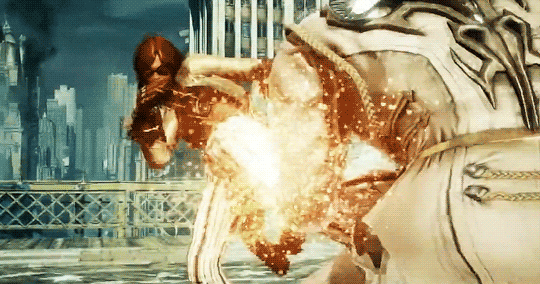
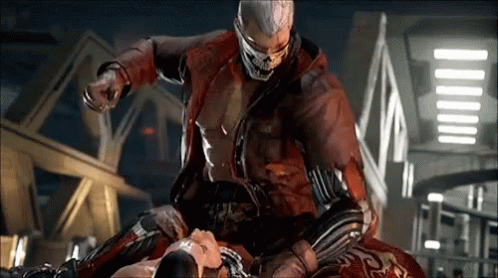

Tekken 7 (鉄拳7?) es un videojuego de lucha en desarrollado y publicado por Namco. El mismo utiliza
el motor de videojuego Unreal Engine. El videojuego también marca el 20º aniversario de la saga
Tekken. Tekken 7 fue anunciado por primera vez por el director de Tekken, Katsuhiro Harada, el día
13/07/2014 durante en un evento . Él reveló por primera vez el trailer de promoción, y dio a
conocer un nuevo logotipo para la saga. Todo comenzó cuando Harada descubrió que el título se
filtró en internet. El videojuego no estaba planeado para ser anunciado, pero debido a la fuga no
tuvo otra opción que dar cuenta de ello.
Además, el trailer también había revelado una figura femenina, que se especula se trataría de
Kazumi, hablando con personaje todavía desconocido. Por el momento, no ha habido ninguna
confirmación "oficial" de quién es este personaje. Junto con el desarrollo confirmado del videojuego
Tekken × Street Fighter, un trailer extendido de lanzamiento, los detalles del diseño de
personajes, y otra información en relación con el videojuego fue revelada en su panel para el evento
San Diego Comic-Con el día 25/07/2014.
Tekken 7 haría uso del {motor de videojuego Unreal Engine 4, que permitirá que el videojuego sea
desarrollado para múltiples plataformas. Bandai Namco no pudo realizar una demostración del sistema
de juego en el evento San Diego Comic-Con, debido a que aún se está trabajando en su desarrollo.
Fue declarado por Harada que la publicación arcade de Tekken 7 tendría funciones de red muy
similares a las del videojuego Tekken Tag Tournament 2.
Habría varios renombrados artistas invitados que diseñarían las apariencias para los personajes.
Dichos artistas por ahora incluyeron a Mari Shimazaki (Bayonetta), Yusuke Kozaki (Fire Emblem
Awakening, No More Heroes), Ninnin (Duel Masters, Cardfight!! Vanguard) y Kenichiro Yoshimura (Max
Anarchy/Anarchy Reigns). Shinji Aramaki es el encargado de dirigir la secuencia cinemática de
introducción para Tekken 7. También revelaron que el videojuego se centraria en batallas uno-a-uno
nuevamente, como en las anteriores entregas numeradas, y no basadas en equipos de lucha como la
saga Tekken Tag Tournament. Se confirmo que el personaje Lars Alexandersson también esta
confirmado que regresaría, siendo re-diseñado por Ninnin.
Tekken 7 tuvo una versión arcade de prueba en Japón los días 3, 4 y 5 del mes de octubre del 2014.
Tekken 7 además tendría dos nuevos sistemas
Tekken 7 (鉄拳7?) es un videojuego de lucha en desarrollado y publicado por Namco. El mismo utiliza
el motor de videojuego Unreal Engine. El videojuego también marca el 20º aniversario de la saga
Tekken.

Luego de la destrucción de Azazel, El paradero de Jin Kazama es desconocido. Sin su liderazgo, las
Fuerzas Tekken se encuentran acéfalas, hasta que Nina Williams asume el mando de facto. Las cosas
se complican cuando se revela que Heihachi Mishima, cuyo paradero hasta el momento era
desconocido luego de los acontecimientos de Tekken 4, hace su reaparición sorpresa exigiendo de
inmediato el liderazgo de la Mishima Zaibatsu para declararle la guerra a su hijo Kazuya, líder de la Corporación G.
Mientras tanto, tropas de la ONU lideradas por Raven encuentran a Jin y logran ponerlo a salvo.
Cuando lo transportaban en el helicóptero, el Gen Diabólico presente en Jin hace que este despierte
y escape de allí, huyendo tanto de la Corporación G como de las fuerzas de Mishima Zaibatsu,
yendo a parar a los desiertos de Oriente medio donde vaga sin rumbo fijo hasta que es encontrado por
Lars Alexandersson quien ha unido fuerzas con Lee Chaolan, presidente de Violet Systems,
compañía que se opone a la Corporación G y a Mishima Zaibatsu. Una vez llegan a Violet Systems, Jin
es colocado en estado de coma inducido hasta que se recupere completamente.
Mientras todo esto ocurre, Heihachi es atacado en su dojo por un misterioso personaje de nombre
Akuma el cual afirma haber sido enviado por la difunta esposa de Heihachi, Kazumi Mishima para
acabar con Heihachi y con Kazuya. Ambos se enfrentan en una batalla bastante igualada, aunque el
último en quedar en pie resulta ser Akuma. Heihachi logra recuperarse, pero se hace pasar por muerto
para tenderle una trampa a Kazuya. Akuma se presenta entonces ante Kazuya, momento que
aprovecha Heihachi para revelar al mundo el Gen Diabólico que posee. Con la opinión pública en su
contra, Kazuya decide destruir el satélite de la Mishima Zaibatsu, desatando una ola de destrucción.
Heihachi entonces, en un movimiento sorpresa, decide contarle a un periodista toda la verdad de las
acciones cometidas por la Mishima Zaibatsu prometiendo sacar a la luz toda la verdad cuando sea
el momento; al parecer el origen de esta tragedia sobreviene cuando Heihachi descubre que Kazumi
estaba poseída por un espíritu maligno que resulta ser el Gen Diabólico presente en Kazuya y Jin.
Entonces Kazumi, le pide a su esposo que la mate antes de que el espíritu maligno se apodere
completamente de ella a lo que Heihachi accede. Decidido a no permitir que el Gen Diabólico manche
el legado de la Familia Mishima, Heihachi decide matar a Kazuya arrojándolo al acantilado
creyendo que no sobreviviría si estaba equivocado en el caso de que el Gen Diabólico no estuviera
presente en él; desafortunadamente para Heihachi estaba equivocado Ya que Kazuya sobrevivió a la
caída, decidido a vengar a su madre. Ya en el presente, Heihachi y Kazuya deciden zanjar sus
diferencias de una vez por todas teniendo su enfrentamiento final en el volcán donde Heihachi arrojó
a Kazuya hace veinte años. Kazuya, al enterarse de cómo Heihachi mató a su madre, se enfurece y
se lanza contra él. Ambos se enfrentan, hasta que Kazuya se transforma en una versión demoníaca
aún más poderosa. El poder de Kazuya resulta abrumador, pero Heihachi no se amedrenta y consigue
derribarlo haciendo que se debilite lo suficiente para perder su versión demoniaca y vuelva a su
apariencia humana. Ambos muy debilitados empiezan a darse golpes el uno al otro hasta que finalmente
acumulando todo el rencor que siente hacia su padre, Kazuya lanza un golpe a Heihachi que
consigue matarlo. Cargando con el cuerpo inerte de su padre, lo arroja al cráter del volcán,
pronunciando las palabras que su padre le dijo cuando era niño: «Una pelea consiste en ser el último
que acaba en pie. Nada más.La victoria de Kazuya parece que por fin le conduciría a su
objetivo de dominación mundial. Sin embargo, un recuperado Jin Kazama proclama ante Lars y Lee que
acabará con Kazuya de una vez por todas.

Este es el primer videojuego de la saga Tekken donde Kazumi Mishima hace su primera aparición
canónica. Antes del videojuego Tekken 7, el personaje solamente había sido aludido dos veces.
La primera vez fue en el escenario de Heihachi para el videojuego Tekken 2, en el que sus nombres
("Heihachi y Kazumi") se estaban grabados en la tabla del suelo (que también se mostró en el primer
trailer de promoción para Tekken 7).
La segunda vez fue en la animación OVA no-canónica Tekken: The Motion Picture, en donde fue mostrada
en una fotografía y fue mencionada simplemente como la "Madre de Kazuya" en aquel momento.
Los luchadores reiterados confirmados que han recibido atuendo principales nuevos o modificados son
hasta ahora Hwoarang, Jin, Kazuya, King II, Lars, Marshall, Jack-7 y sobre todo, Yoshimitsu.
Resulta familiar la escena en el volcán de Kazuya y Heihachi en el teaser de presentación. Esta
escena parece recordar a las dos primeras entregas de la saga Tekken, donde uno de ellos cae al
vacío dentro de un volcán.
También es el primer juego en el que ciertos personajes no canónicos hicieron su debut canónico en
el juego principal, en este caso, Eliza de Tekken Revolution.
Este es el primer juego principal de Tekken y la segunda entrada del juego Tekken (la primera es
Tekken Tag Tournament 2), en el que todos los personajes hablan el idioma nativo de su país de
origen, a diferencia de los juegos anteriores de Tekken, donde todos los personajes hablaban inglés
o japonés, seguido de chino y coreano en Tekken 5.
Este es el primer juego de la serie en el que se pueden revivir eventos pasados jugando a través de
ellos, como en el segmento de flashback de introducción de Tekken 5, a diferencia de Tekken 6,
donde la historia de los juegos anteriores solo se presentó en escenas en el prólogo del modo
Campaña.
En Fated Retribution y la versión de consola, todos los personajes restantes (no invitados) también
recibieron nuevos atuendos predeterminados para cada uno de ellos (incluido Hwoarang, a quien
ahora se le da uno más nuevo), y King también recibe una actualización del nuevo. (una capa) y Eliza
es la única que no recibe una ya que esta es su primera aparición en la serie principal.
Este es el segundo juego que presenta un personaje invitado, siendo Tekken 3 el primero, y el primer
juego que presenta más de un personaje invitado.
Esta es también la primera vez que Tekken presenta tres personajes diferentes provenientes de tres
compañías de juegos diferentes: Capcom, SNK y Square Enix, y tres universos diferentes: Street
Fighter, The King of Fighters / Fatal Fury / Art of Fighting y Final Fantasy. Haciéndolo uno de los
juegos de Tekken más prolíficos y ambiciosos jamás creado en la historia de los juegos de lucha.
Ahora es el segundo juego desde Tekken 3 que presenta un personaje invitado proveniente de una serie
de cómics. El segundo personaje es Negan de la franquicia The Walking Dead de Image Comics.
Este es el primer juego de Tekken no derivado que se lanza para PC.
Este es también el primer juego de Tekken que se lanza para PlayStation 4 y Xbox One.
Este es el tercer juego de Tekken desde Tekken y Tekken 2, y el primero después de su introducción,
que no presenta un personaje imitador que se pueda jugar.
Los looks de Young Heihachi se pueden obtener como personalización (cabello y barba).
Muchos personajes no regresaron a Tekken 7 como personajes jugables, pero algunos hacen cameos en el
juego. Combot, por ejemplo, se ve en el modo Historia en segundo plano en Violet Systems. Otros
ejemplos son Jack-4, Jack-6 y Devil Kazuya. Se mencionan muchos personajes del universo Tekken
que no se pueden jugar en el juego. Algunos ejemplos son Sebastian, Emma Kliesen, Jane, Dr. Abel
y Azazel.Este es el segundo juego de la serie y el primer juego canónico que usa gráficos del juego en los
finales en lugar de CGI. Antes de la temporada 2, que agrega a Marduk, Steve era el único veterano
de Tekken 4 en este juego, un estado similar al veterano de Tekken 2, Lei. Este es el primer
juego canónico en el que Jane, desde que fue presentada, no aparece en el final de Jack.
Este juego está dedicado a Masaya Nakamura, quien fue un empresario y fundador de Namco. Falleció el
22 de enero de 2017, la misma fecha en que se emitió el episodio 15 de Kamen Rider Ex-Aid.
Hablando de Kamen Rider Ex-Aid, la versión actualizada del juego de arcade, Fated Retribution se
estaba usando de alguna manera en lugar de Tekken 6: Bloodline Rebellion, lo que provocó una
continuidad en dicha serie de televisión, ya que 6 se lanzó antes de que Zero Day ocurriera por
primera vez, mientras que 7 se lanzó cuatro años después de Zero Day y el lanzamiento de la consola
Tekken Tag Tournament 2, y un año antes de que se emitiera Kamen Rider Ex-Aid. Es probable que
Kamen Rider Ex-Aid use Tekken 7: Fated Retribution sea para promover el lanzamiento de su consola
en 2017.
Tekken 7 es el primer juego que marca el regreso de los enfrentamientos de Capcom y SNK desde SNK
vs. Capcom: SVC Chaos.